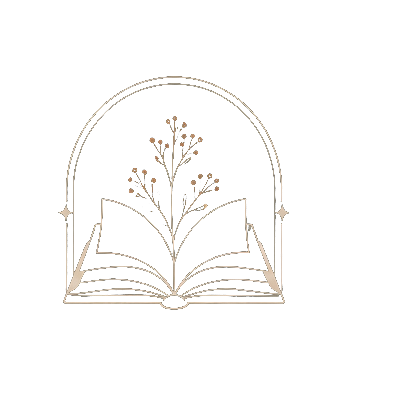

Read this first
the door to the life you keep almost living
You came here for the 1%. You're thinking money. I get it.
That's not the 1% I mean though. I mean the people who wake up and actually love their life. And it has nothing to do with money. Money buys you opportunities, that part is true. But you can have every opportunity on earth and still be miserable. You can have all of it and never once figure out what happy was even supposed to feel like.
That is the room almost no one gets into. I'm going to show you the door to it.
The advantage is not knowing; it is executing what everyone knows and almost no one does.
The door is open. It always has been. No lock, no line, no test to pass. And almost nobody walks through.
So you found it. Congratulations. The secret to happiness, right here, no fine print.
Here it is. Happiness is a mindset. You find whatever you go looking for.
Alright. Have fun with that.
No. For real. I know you have heard "it is all mindset" a hundred times and rolled your eyes. So do not take my word for it. Buy a red car and suddenly red cars are everywhere. They were always there, your eyes just started letting them in. Decide someone is against you, and every little thing they do turns into proof. Two people walk out of the same room having lived two different days.
That is not magic, it is just how attention works. You do not see the world as it is, you see it the way you are looking for it. Look for everything wrong and you will find it, all day. Look for one thing to be grateful for, and that shows up too. Same life, different eyes. So the life in front of you is not only happening to you. You are painting it, and you have been holding the brush the whole time. That part comes first. The work comes after, and when you do it from there, that is when things start to move.
And here is what makes it click. This comes from three places that have nothing to do with each other. Cold logic, the kind you can prove on paper. The zodiac, the oldest map we have of who a person is. And the old wisdom the mystics wrote down long before any of us got here. Three roads that never once talk to each other, and they all end at the same door. When three strangers that different tell you the exact same thing, you stop calling it a coincidence. You start calling it the truth.
Twelve signs. Twelve laws. One a month, or one for a lifetime. The dose is yours.
The Wheel
logic · the stars · the soul
Tap any sign to enter its law
You do not need all twelve. Four, run for real, will change your life past recognition. Start with the one that made you most uncomfortable to read, because that is the one you need. That is the whole shape of it: one sign, then the next, all the way around the wheel, at whatever pace is yours.
Ninety-nine percent of people will read this and do nothing. They will tell themselves that reading it was the improvement, that something has already changed. Nothing has. That is exactly why you are still living the same old life you have always lived. Reading is not the door. Walking through it is.
The door is open. It has been open this whole time. I am just the first one standing here holding it.
Come become the 1%. The real one.
xo, Eleanora
